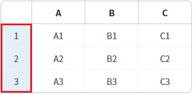
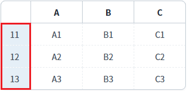
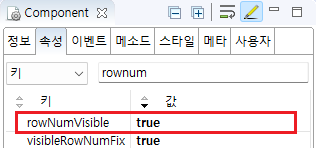

GridView의 'setStartRowNumber' 메소드를 사용하여 행 번호 컬럼의 시작값을 설정하는 예제입니다. 행 번호 컬럼은 GridView의 'rowNumVisible' 속성을 'true'로 설정하면 표시할 수 있습니다.
행 번호의 시작 값 설정하기
예제 영역 '행 번호의 시작 값 설정하기'에 구성된 GridView에서 테스트합니다.1
STEP 1: 초기 행 번호를 확인합니다.
GridView의 행 번호 시작 값을 확인합니다.
시작 값은 '1' 입니다.
Image 1.브라우저(Chrome) 실행 예시

2
STEP 2: 행 번호 시작 값을 변경합니다.
'시작 값를 11로 설정하기' 버튼을 클릭합니다.
3
STEP 3: 실행 결과를 확인합니다.
GridView의 행 번호 시작 값이 '11'로 변경됩니다.
Image 2.브라우저(Chrome) 실행 예시

1
STEP 1: GridView의 속성을 정의합니다.
[필수] rowNumVisible="true"
[default:false, true] 행 번호 표시 여부
Image 3.웹스퀘어 스튜디오의 Component View - 속성 설정 예시

Example 1.Source
<!-- gridView 의 소스 본문 예시 --> <w2:gridView rowNumVisible="true"> <!-- 중략 --> </w2:gridView>
2
STEP 2: 스크립트를 작성합니다.
GridView의 메소드 'setStartRowNumber'를 사용합니다.
Example 2.Script
//예제 파일의 스크립트 "scwin.btn_ex1_onclick"를 참고하세요. //GridView [grd_exam1]의 행 번호 시작 값을 11로 설정합니다. grd_exam1.setStartRowNumber(10);
rowNumVisible
setStartRowNumber( rowIndex )